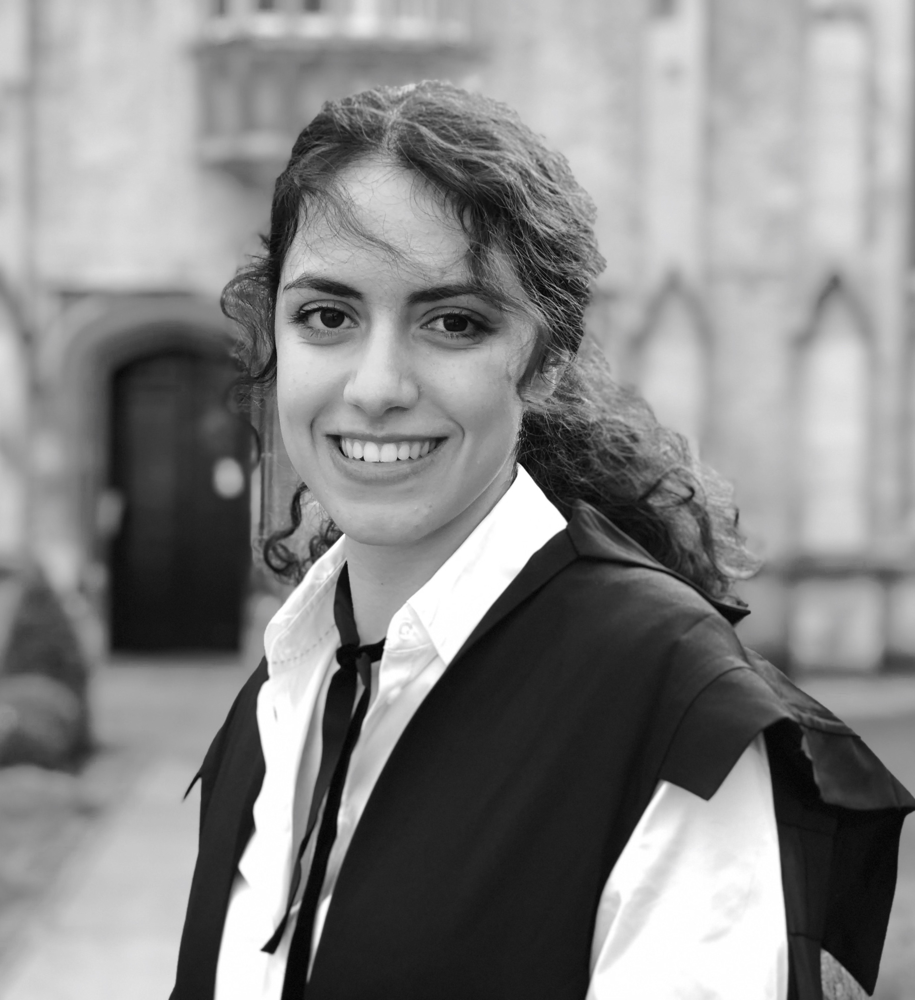

{% seo %}

---
layout: default
title: Home
---
<div class="blurb">
	<h1>Hi there, I'm Sahra!</h1>
	
	<p> Thank you for visiting my website which was only recently created due to social peer pressure. I hope I will fill it with lots of content in the time to come!</p>
	<p> I'm a first year DPhil student at University College at the University of Oxford. I am part of the StatML CDT in Modern Statistics and Statistical Machine Learning supervised by Luke Kelly and Chris Holmes. I am also affiliated with the Novartis Big Data Institute collaboration on AI in Medicine. </p>
	<p> I'm broadly interested in Bayesian Machine Learning and especially its application in the context of clinical trials.</p>
	<a href="/about">Read more about my life...</a></p>
</div><!-- /.blurb -->
